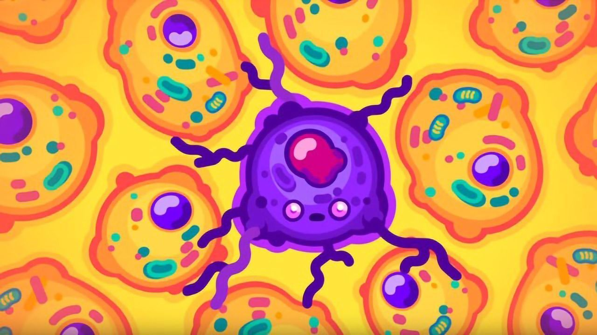
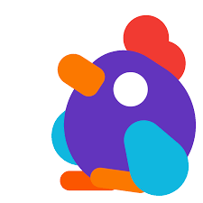

Cancer is a creepy and mysterious thing. In the process of trying to understand it to get better at killing it, we discovered a biological paradox that remains unsolved to this day. Large animals seem to be immune to cancer, which doesn't make any sense. The bigger a being, the more cancer it should have to understand why, we first need to take a look at the nature of cancer itself.
 Our cells are protein robots made out of hundereds of millions of parts, guided only by chemical reactions. They create and dismantle structures, sustain a metabolism to gain energy or make almost perfect copies of themselves. We call these complex chemical reactions pathways. They are biochemical networks upon networks, interwined and stacked on the top of each other. Most of them can barely be comprehended by a single human mind. And yet they function perfectly until they don't. With billions of trillions of reactions happening in thousands of networks over many years, the question is not if something will go wrong, but when.
Tiny mistakes add up until the grandiose machinery gets corrupted. To prevent this from getting out of hand, our cells have kill switeches that make them commit suicide. But these kill switches are not infallible. If they fail, a cell can turn into a cancer cell. Most of them are slain by the immune system very quickly. But this is a numbers game. Given enough time, a cell will accrue enough mistakes, slip by unnoticed and begin making more of itself. All animals have to deal with this problem. In general, the cells of different animals are the same size. the cells of a mouse aren't smalled than yours. It just has fewer cells in total and a shorter lifespan. Fewer cells and a short life means a lower chance of things going wrong or cells mutating. Or at least it should mean that humans live about 50 times longer and have 1000 times more cells than mice. Yet the rate of cancer is basically the same in humans and in mice. Even weirder blue whales with about 3000 times more cells than humans don't seem to get cancer at all, really.
This is Peto's paradox. The baffling realization that large animals have much, much less cancer than they should. Scientists thin there are two main ways of explaining the paradox. Evolution and hyper tumors.
Evolve or become a blob of cancer. As multicellular beings developed to 600 million years ago, animals became bigger and bigger, which added more and more cells and hence more and more chances that cells could be corrupted. So, the collective had to invest in better and better cancer defenses, the ones that did not die out. But cancer doesn't just happen. It's a process that involves many individual mistakes and mutations in several specific genes within the same cell. These genes are called proto-oncogenes. And when they mutate, it's bad news. For example, with the right mutation, a cell will lose its ability to kill itself. Another mutation, and it will develop the ability to hide, another, and it will send out calls for resources. Another one and it will multiply quickly. These oncogenes have an antagonist, though tumor suppressor genes. They prevent these critical mutations from happening or order the cell to kill itself. If they decide it's beyond repair.
It turns out that large animals have an increased number of them. Because of this, elephant cells require more mutations than micelles to develop a tumor. They are not immune, but more resilient. This adaptation probably coes with a cost in some form, but researchers still aren't sure what it is. Maybe tumor supressors make elephants age quicker later in life or slow down how quickly injuries heal. We don't know yet, but the solution to the paradox may actually be something different.
Hypertumors are named after hyper-parasites, the parasites of parasites. Hyper tumors are the tumors of tumors. Cancer can be thought of as a breakdown in cooperation. Normally, cells work together to form structures like organs, tissue, or elements of the immune system. But cancer cells are selfish and only work for their own short term benefit. If they are successful, they form tumors huge cancer collectives that can be very hard to kill. Making a tumor is hard work though. Millions or billions of cancer cells multiply rapidly, which requires a lot of resources and energy. The amount of nutrients they conceal from the body becomes the limiting factor for growth. So the tumor cells trick the body to build new blood vessels directly to the tumor to feed the thing, killing it.
This process can repeat over and over, and this may prevent cancer from becoming a problem for a large organism. It is possible that large animals have more of these hyper tumors than we realize. They might just not become big enough to notice. Which makes sense. A two gram tumor is 10% of a mouse's body weight, while it's less than 0.002% of a human and 0.000002% of a blue whale. All three tumors require the same number of cell divisons and have the same number of cells. So an old blue whale might be filled with tiny cancers and just not care.
There are other propsed solutions to the Peto's paradox such as different metabolic rates or different cellular architecture but right now we just don't know. Scientists are working on the problem. Figuring out how large animals are resilient to one of the most deadly diseases we know could open the path to new therapies and treatments. Cancer has always been a challenge. Today we are finally beginning to understand it and by doing so, one day we might finally overcome it. 